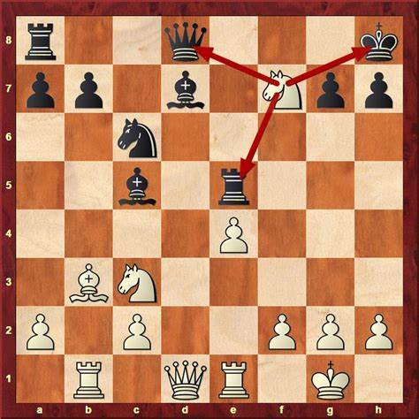
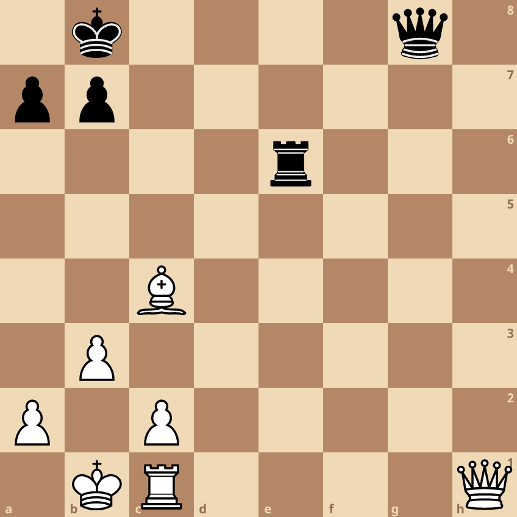
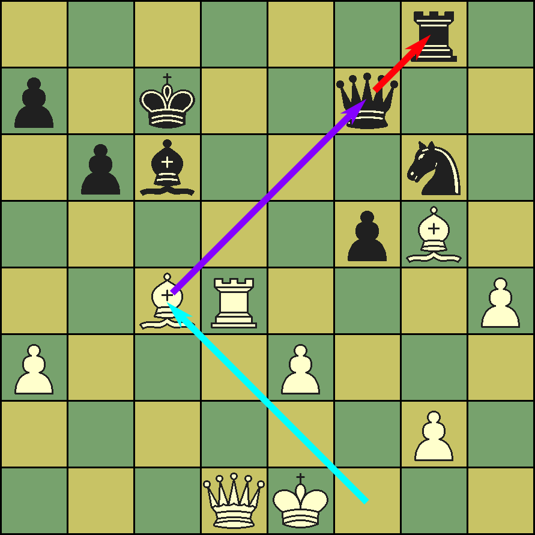

What exactly are tactics?
Tactics are short-term calculated sequences of moves resulting in
checkmate, the win of material, or some other gain. An
understanding of tactics is crucial to playing good chess. Most games,
especially at the club level, are decided by tactical mistakes.
Learning the basic tactics in chess will help you in two ways. It will let
you take advantage of your opponent's mistakes while avoiding your own.
There are four basic tactics that every chess player should know:
1.)Fool's Mate
2.)Forks
3.)Pins
4.)Skewers
This is the fastest way to checkmate, and it
capitalizes on a few key mistakes by your opponent.
Sometimes one piece can attack two or more opposing pieces at the
same time. This is known as a fork. Knights are prized for their
forking ability, but every piece has the potential to fork multiple
enemies.
The diagram above displays a very unfortunate fork.
As the move Nf7+ would hit both the rook and queen and it hits the king
which means that the move is a check and the person playing as black
have no choice but to move the king and lose either the rook or the queen
Forks are powerful because your opponent can only move one piece
at a time, making it difficult to avoid losing at least one piece. If
you're the victim of a fork, look for ways to move one piece to protect
another or to make a bigger threat—such as a check—to which your
opponent must respond. This strategy might give you enough time to
save all of your pieces from the attack.
A pin is a common tactic that restricts the movement of your
opponent's pieces. Create a pin by attacking a piece in such a way that
if your opponent moves it, you will be able to capture a more valuable
piece behind it. Only long-range pieces queens, rooks and bishops
can create pins
If the piece behind the pinned piece is a king, the pinned piece is not
allowed to move, as it is illegal to put a king in check. This is called an
absolute pin. If moving the pinned piece would only allow a more
valuable piece—such as a queen—to be captured, it is called a relative
pin.
In the diagram above, the bishop is pinning the rook to the queen
Both the queen and rook is worth more than the bishop, hence this
is an example of a relative pin. Not to mention that White was already
up an extra piece, this pin would seal the deal for white
Skewers are closely related to pins: They look very similar but work in
reverse. In a skewer, a valuable piece is attacked and forced to move to
avoid being captured, leaving a less valuable piece behind it free for
capture. Like pins, you can only create skewers using long-range pieces.
In the diagram above, the black king is being checked by the white
rook. Black's king can easily move to safety, but doing so allows white
to play Rxe8, winning the queen.